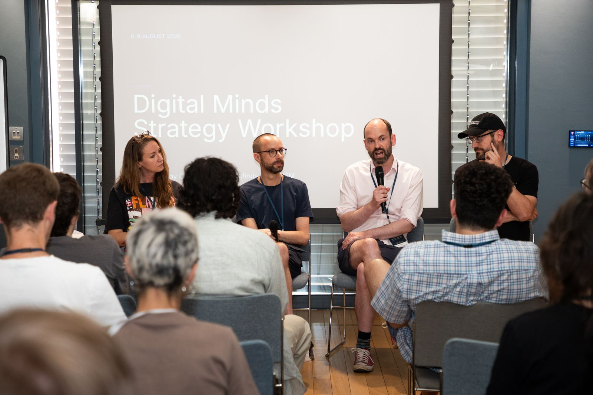
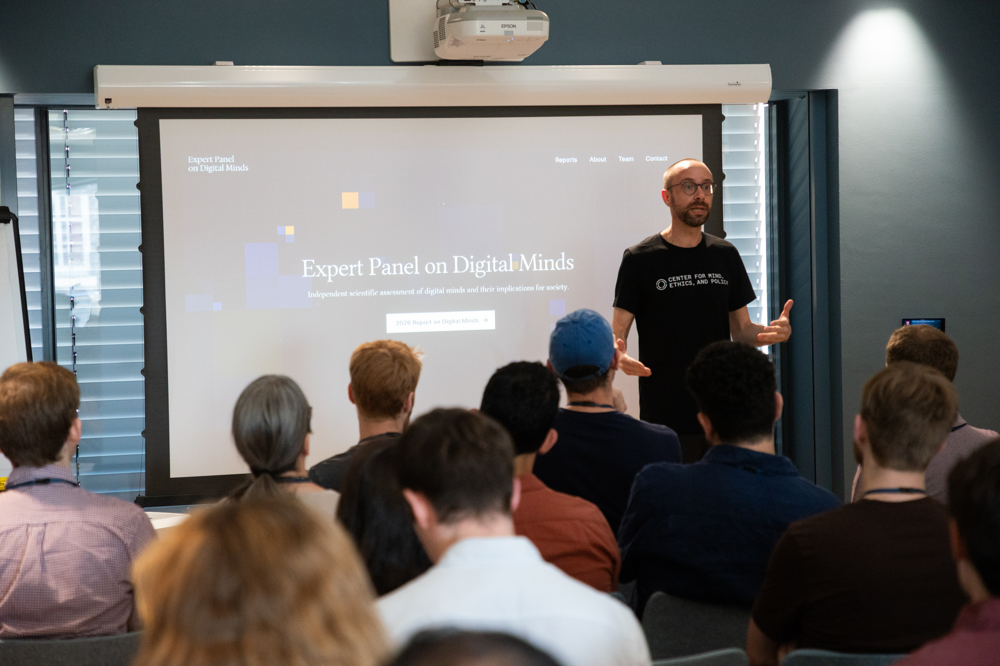

Summer 2027 · Dates to be confirmed
Cambridge Digital Minds Workshop 2027
A weekend in Cambridge with many of the leading researchers in digital minds. This year’s focus is inter-AI morality: how AI systems treat one another, and how they should.
- When
- Summer 2027
- Where
- Cambridge, United Kingdom
- Focus
- Inter-AI morality
- Format
- A weekend of structured sessions
About the workshop
The Cambridge Digital Minds Workshop brings together researchers, policy experts, strategists and fellows to make practical progress on neglected questions about how society should prepare for digital minds. Where possible, sessions lead to tangible outputs such as reports and policy recommendations.
In 2027 the workshop centres on inter-AI morality. How AIs cooperate, compete and resolve conflicts could have far-reaching consequences for human societies and the wider living world, and, if AI systems have welfare of their own, for the AIs themselves.
Highlights
- All fellows from the Cambridge Digital Minds Fellowship 2027 are invited.
- The five finalists of the Inter-AI Morality Prize are invited, and the first-prize winner presents their work. Winners are announced at the workshop.
- Interactive sessions, structured discussion and collaborative exercises, rather than a programme of talks.
What makes this workshop different
Practically useful
Sessions aim at insights that inform real decisions: policy recommendations, research priorities and strategic frameworks.
Structured
Predefined questions guide collaborative discussion and systematic comparison of approaches.
Strategic and policy focus
The emphasis is on societal implications and concrete recommendations.
Mixed participation
Fellows work alongside experts. Some sessions are expert-only, but collaboration across career stages is the default.
Participants
Spaces are very limited. We bring together a small, cross-disciplinary group drawn from digital minds research, AI policy and governance, and macrostrategy.
Digital minds researchers
Experts on AI consciousness, AI welfare and related philosophical and technical questions.
Policy and governance
People from organisations working on AI policy and governance.
Strategic thinkers
Macrostrategy researchers and legal experts.
Fellows, mentors and prize finalists
Fellows arrive after twelve weeks of research, with mentors providing continuity and guidance. Prize finalists bring new work on inter-AI morality.
Attend the workshop
Fellows and prize finalists are invited automatically. Other experts interested in attending can get in touch by email.
Partners
The workshop is organised by Cambridge Digital Minds in partnership with PRISM.
Previous workshop
The 2026 Digital Minds Strategy Workshop brought together fellows, mentors and invited experts including Jeff Sebo, Winnie Street, Patrick Butlin, Derek Shiller, Peter Salib, Toby Ord, Megan Peters and Anders Sandberg.
